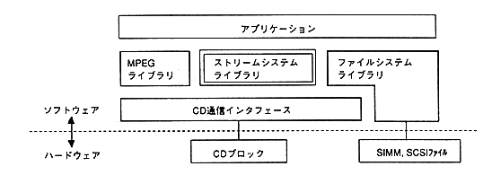

Return to previous page ｜ Return to menu ｜ Go to next page
-
Stream system library
-
1. Overview
- Stream system library is a library for efficiently reading streams on CD (interleaved files, etc.).
-
1.1 Library configuration
- Figure 1.1 shows the CD-related library configuration.

Figure 1.1 CD-related library configuration
-
1.2 Stream System Functional Overview
-
(1) CD-ROM support XA level file access
-
- Supports access to mode 2 sector using subheader.
(Access to mode 1 sector is also possible)
-
(2) Supports various transfer methods
-
- Stream data on the CD can be transferred to the main CPU area.
By registering the - function, you can process the data while reading the stream data on the CD.
- Stream data read into the CD buffer can be handled freely.
-
(3) Support access by file identifier
-
- Since it has the same directory management function as the file system, it can be accessed by the file identifier (sequence number in the directory).
Return to previous page ｜ Return to menu ｜ Go to next page